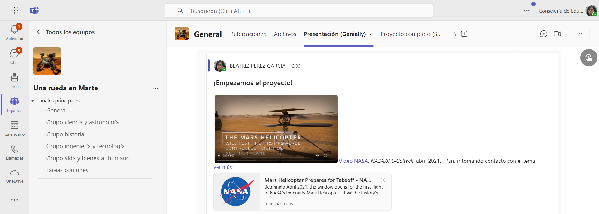
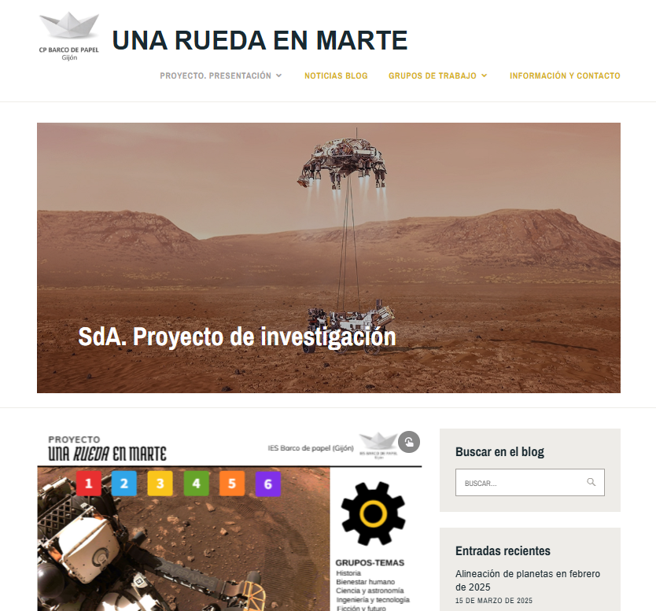

Aplicaciones y recursos
Trabajo personal, comunicación y colaboración
- Cuentas de identidad digital institucional. Acceso a todos los servicios educativos.
- Office 365 corporativo: Teams, correo, Forms (cuestionarios), Stream (canales de vídeo), Sway (presentaciones), OneNote, etc. Aplicaciones de ofimática.
- Teams: canal de grupo. Se crea un canal para cada grupo. El canal contiene instrucciones y recursos específicos para el desarrollo del trabajo del grupo y herramientas de comunicación y colaboración: chat, videoconferencias, espacio para documentación, etc.

Teams del proyecto. Acceso con cuenta educastur Microsoft 365.
-
- Teams: canal general (toda la clase). Todos los grupos acceden al equipo general en el que disponen de herramientas de comunicación con toda la clase, acceso al espacio común de documentación, y enlaces a todos los espacios del proyecto y al seguimiento de tareas.
- Teams: asambleas. Se utiliza Teams para el ciclo de charlas para los centros de primaria. El grupo crea sesiones tipo Asamblea e invita al profesorado y alumnado del centro de primaria enviando al centro un correo con el enlace a las diferentes sesiones. (Todo el profesorado y el alumnado de estos centros dispone de cuenta de acceso a Teams).
- OneNote: cuaderno personal.
Recomendadas para la elaboración de productos
- Líneas de tiempo: Sutori, Timeline, Timetoast, etc.
- Mapas: Google maps para búsqueda y navegación general y My maps para creación de mapas personalizados.
- Presentaciones públicas: presentaciones, infografías, vídeos y audios, imágenes, etc. Por ejemplo: Sway, PowerPoint, Genially, Audacity, Speaker, Canva, Picktochart...
- Canales multimedia: Stream, Youtube, Vimeo, Ivoox, Anchor…
- Creación y edición de audio y vídeo: FilmoraGo, Avidemux, Audacity, Ocenaudio.
- Utilidades: códigos QR, acortador URL, traductor, conversor de formatos de vídeo, gestión, subtítulos…
- Bancos de imágenes: Wikimedia Commons, Search.CreativeCommons, Dreamstime, Pixabay, UnSplash, Pexels, Biblioteca de la NASA.
- Licencias Creative Commons.
- IA: Google Gemini y Microsoft Copilot (incluido en Microsoft 365 de Educación).
Difusión
- Muro de padlet: recursos y curiosidades sobre los temas de grupo y tareas comunes.
- Blog del proyecto (Educastur Blog). Difusión interna y externa. Se publica el proyecto completo: marco, planteamiento, proceso, resultados y productos finales. Ofrece una página específica para cada grupo de trabajo para definir su organización, las instrucciones de trabajo y para publicar los productos finales.

Blog del proyecto (Educastur blog).
- Web del centro (Alojaweb). Difusión pública en la web institucional del centro. Publicación de la noticia del proyecto y de los hitos significativos. Enlaces a los diferentes espacios en internet del proyecto.